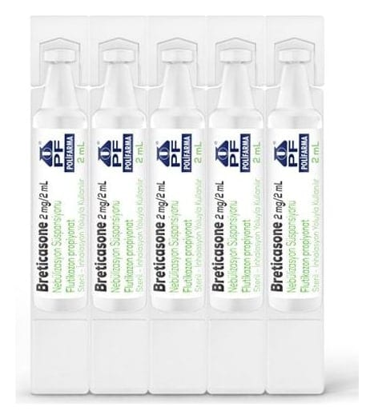

Breticasone 2 mg/2 ml Nebülizasyon Süspansiyonu , 10 Adet

Ne için kullanılır
KT · Bölüm 1BRETİCASONE, flutikazon propiyonat içerir. Flutikazon propiyonat kortikosteroidler adı verilen ilaç grubunun bir üyesidir ve yangı (iltihap, enflamasyon) giderici etkisi olduğundan, akciğerlerdeki hava yollarının duvarlarında oluşan şişme ve hassasiyeti azaltarak nefes alıp verme sorunlarını rahatlatır.
BRETİCASONE düzenli tedavi gereken hastalarda astım ataklarının önlenmesine yardımcı olur. Bu nedenle “önleyici” olarak da adlandırılır. Düzenli olarak her gün kullanılması gerekir.
BRETİCASONE nefes darlığı hissettiğiniz ani astım ataklarının tedavisinde kullanılmaz.
BRETİCASONE, her uygulamada 2 mg flutikazon propiyonat sağlayan, plastik nebüllerde sunulmaktadır. Süspansiyon beyaz, opak homojen bir görünüşe sahiptir. Her 5 nebül bir folyo paket içinde bulunur ve her karton kutu 2 ayrı folyo poşet içinde toplam 10 nebül içerir.